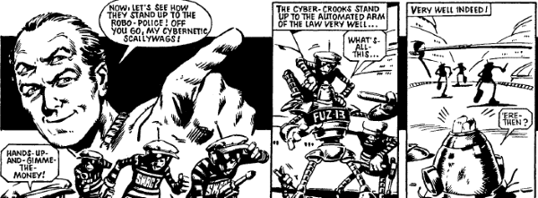

A literal four-eyed geek causes chaos as his hubris outweighs his supposedly vast intellect.
Art by Steve Dillon
| Story Title | Parts | Pages | w indicates a wraparound coverCovers | Year(s) | Issues | Writer | Artist | Colourist | Letterer |
|---|---|---|---|---|---|---|---|---|---|
From Ro‑Jaws' Robo‑TalesFinal Solution | 2 | 8 | 0 | 1980 | 189-190 | Alan Moore | Steve Dillon | [b&w] | John Aldrich |
From Tharg's Future ShocksThe Return of the Two-Storey Brain | 1 | 5 | 0 | 1981 | 209 | Alan Moore | Mike White | [b&w] | Peter Knight |
No supertitle. Subtitled "An Abelard Snazz Story". The Double Decker-Dome Strikes Back | 2 | 10 | 0 | 1981 | 237-238 | Alan Moore | Mike White | [b&w] | Peter Knight |
No supertitle. Subtitled "An Abelard Snazz Misadventure". Halfway to Paradise | 1 | 6 | 0 | 1982 | 245 | Alan Moore | John Cooper | [b&w] | Tony Jacob |
No supertitle. Subtitled "An Abelard Snazz Misadventure". The Multi-Storey Mind Mellows Out | 1 | 5 | 0 | 1982 | 254 | Alan Moore | Paul Neary | [b&w] | Tony Jacob |
No supertitle. Subtitled "An Abelard Snazz Misadventure". Genius Is Pain | 1 | 5 | 0 | 1983 | 299 | Alan Moore | Mike White | [b&w] | Jack Potter |
| The Only Way Is Up | 1 | 10 | 0 | 2020 | 2206R | Paul Cornell | Anna Readman | Pippa Bowland | Jim Campbell |
| >> Posters << | |||||||||
| Where Are They Now? - Abelard Snazz | 1 | 1 | 0 | 1990 | WS3 | n/a | Mike White | [b&w] | n/a |
| year | episodes | pages |
| 1978 | 0 | 0 |
| 1979 | 0 | 0 |
| 1980 | 2 | 8 |
| 1981 | 3 | 15 |
| 1982 | 2 | 11 |
| 1983 | 1 | 5 |
| 1984 | 0 | 0 |
| 1985 | 0 | 0 |
| 1986 | 0 | 0 |
| 1987 | 0 | 0 |
| 1988 | 0 | 0 |
| 1989 | 0 | 0 |
| 1990 | 0 | 0 |
| 1991 | 0 | 0 |
| 1992 | 0 | 0 |
| 1993 | 0 | 0 |
| 1994 | 0 | 0 |
| 1995 | 0 | 0 |
| 1996 | 0 | 0 |
| 1997 | 0 | 0 |
| 1998 | 0 | 0 |
| 1999 | 0 | 0 |
| 2000 | 0 | 0 |
| 2001 | 0 | 0 |
| 2002 | 0 | 0 |
| 2003 | 0 | 0 |
| 2004 | 0 | 0 |
| 2005 | 0 | 0 |
| 2006 | 0 | 0 |
| 2007 | 0 | 0 |
| 2008 | 0 | 0 |
| 2009 | 0 | 0 |
| 2010 | 0 | 0 |
| 2011 | 0 | 0 |
| 2012 | 0 | 0 |
| 2013 | 0 | 0 |
| 2014 | 0 | 0 |
| 2015 | 0 | 0 |
| 2016 | 0 | 0 |
| 2017 | 0 | 0 |
| 2018 | 0 | 0 |
| 2019 | 0 | 0 |
| 2020 | 1 | 10 |
| 2021 | 0 | 0 |
Comic strip data (excludes other content):